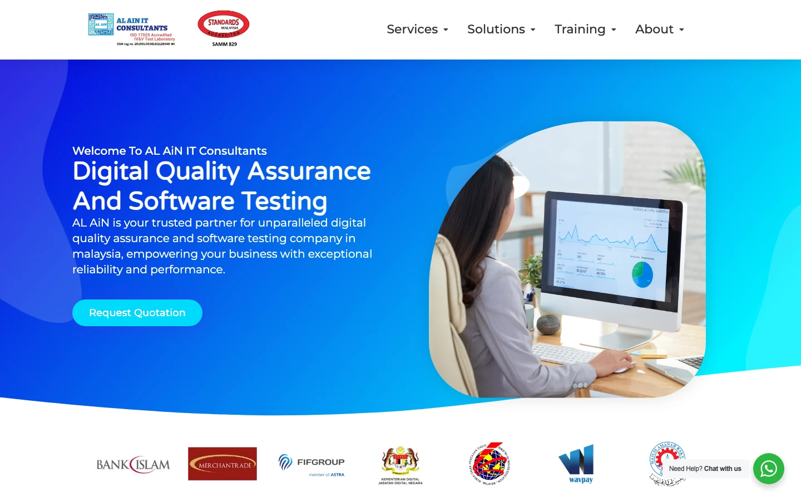
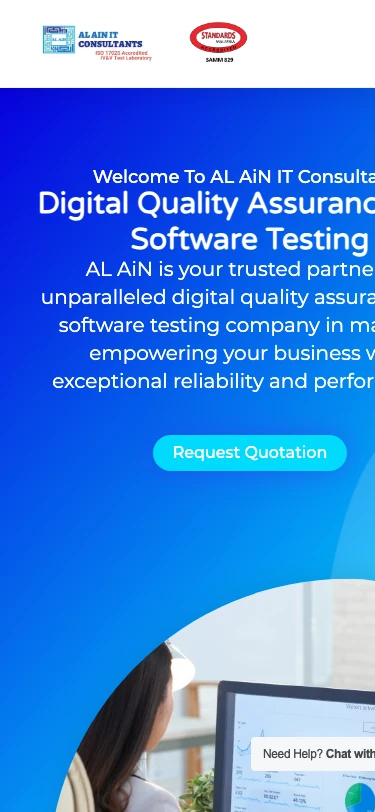
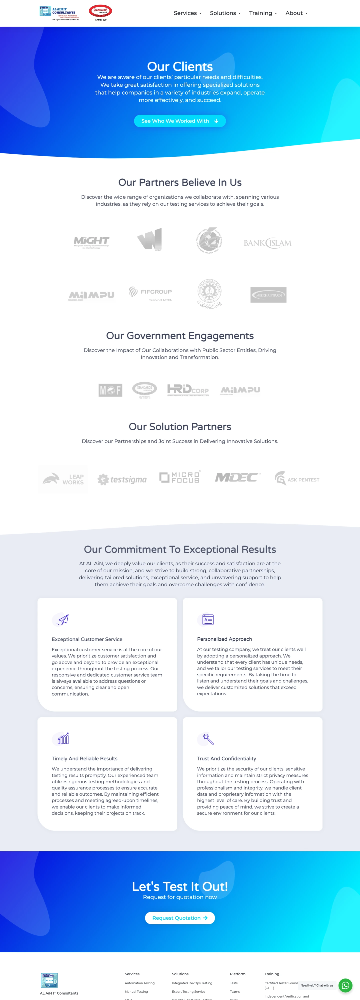
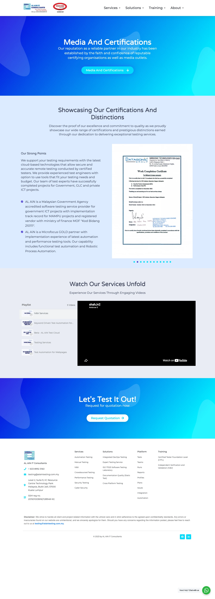

Every figure below was measured live on 20 August 2026, not estimated. The finding in one line: AL AiN holds one of the rarest credentials in Malaysian technology, a Standards Malaysia accredited ISO/IEC 17025 software testing laboratory, and serves a client wall that includes Bank Islam, MAMPU and MARA. Almost none of it exists as text a search engine or a procurement officer can read. What a buyer finds instead: a homepage banner routing enquiries to a numbered gmail address, a hero that clips off both edges of a phone screen, twelve H1 tags, zero structured data, and a news page whose every post carries the same date. The product is verification. The shopfront is unverifiable.
AL AiN is not a weak company with a weak website. It is a strong company with an invisible one. The substance is real and externally verifiable: SAMM 829, an ISO/IEC 17025 lab for functional, performance and static software testing, listed on the Digital Ministry's official IV&V provider register with validity to 5 June 2028, one of four labs there and the only independent commercial one still current, MAMPU accreditation for government ICT projects, MOF registration under Kod Bidang 210111, a Micro Focus GOLD partnership, a Lab Director with 25 years in the field, their own test management platform, and completion paper from a Datasonic engagement for the Accountant General's Department. The website turns every one of those assets into a low-resolution image, a grey logo, or silence. Client names appear nowhere as text. The only testimonials on the site are training students. The freshest content is stamped July 2025 and the footer says 2023. Meanwhile the buyer this company needs, a bank, an insurer, a ministry, runs exactly the background check the site cannot pass. The fix is not a coat of paint. It is an estate rebuilt the way this company writes a test report: claim, evidence, verdict, on every page.
An audit that starts with the site judges aesthetics. This one starts with the company, so every score that follows is a score against revenue. AL AiN IT Consultants Sdn Bhd, SSM 201501003616 (1128948-W), incorporated 2015, Level 2, Suite 9, IIC Resource Centre, Technology Park Malaysia, Bukit Jalil. An independent software testing house: manual, automation, performance and security testing, IV&V, crowdsourced testing, CTFL and IV&V training, and an in-house test management platform. Core domains, in their own words: banking, insurance, government deliverables and R&D prototypes.
Three revenue shapes: project-based testing engagements, embedded QA resources (Junior 1 to 3 years, Middle 3 to 8, Senior over 10, rentable by the day to the year), and accredited lab work. Directory listings place them under US$25 per hour with a US$5,000 minimum: a premium lab selling at bench rates.
Traffic estimated at roughly 707 visits a month by the one directory that publishes a figure. Zero Clutch reviews, a Facebook page from 2024 with about 8 likes, a personal-style LinkedIn profile with 71 connections and no company page. Inference, stated plainly: new business arrives through referrals and government panels, and the web contributes almost nothing.
The Digital Ministry's SQA Portal lists exactly four ISO/IEC 17025 software testing labs eligible for government IV&V. MIMOS's entry lapsed December 2025, TÜV Austria's is cybersecurity-scoped, PayNet's serves the payments network. AL AiN Test Laboratory, valid to 5 June 2028, is the only independent commercial one standing. Add MAMPU accreditation, MOF Kod Bidang 210111, the Bank Islam to MARA client wall, and a signed Datasonic certificate for the Accountant General's Department. On the site, all of it lives as images. Not one client name is text.
Pass the procurement check. A bank's vendor team or a ministry's ICT unit googles the shortlist. What they find must read like the company that holds SAMM 829, not a template with a gmail banner.
Turn the credentials into text. Accreditation number, scope, client sectors, named engagements where permitted: written, dated, crawlable. Today the proof layer is invisible to both Google and screen readers.
Own the mandated demand. MOF circular PK2.1 requires IV&V on critical government systems. RMiT paragraph 10.8 makes pre-deployment testing an enforceable standard for every bank and insurer. The Cybersecurity Act and the e-invoice mandate add more. The estate should be where regulation-driven buyers land.
Sell the lab, not the bench. An accredited laboratory result is a different product from a RM3,000-a-month junior tester. The estate must separate the two so the lab stops being priced like the bench.
Make training the funnel. Training is the only lane with testimonials and the only lane with human warmth. Every CTFL student is a future QA lead who shortlists vendors. Today the courses show no price, no dates, no enrolment path.
Name the platform or shelve it. Nine modules, no name, no screenshot, no demo. A YouTube playlist calls it "AL AiN Test Cloud" in beta. Either it becomes a named, demonstrable product or it stops diluting the services story.
The first surprise of this audit: alaintesting.com.my is not one website. The public sitemap exposes 116 URLs, and inside them live two generations of the same site, an old /services/ tree and a new /services-v2/ tree, both indexed, both returning 200, plus the construction scaffolding: form design templates, checkout popups, preview pages, and the staff directory. The estate was never finished and never cleaned, and the XML admits it to anyone who looks.
| Measurement | alaintesting.com.my · 20 Aug 2026 | Read |
|---|---|---|
| Stack | WordPress, Elementor 3.25.11 with Elementor Pro 3.15.0, Crocoblock Jet suite (JetMenu, JetPopup, JetThemeCore), Forms by BitCode | A page-builder stack with mismatched plugin generations |
| Size on the wire | 476KB HTML · 147 requests · 2.42MB transferred | Heavy for a page that shows six sections |
| Speed | TTFB 2.34s · DOM interactive 3.08s · load 3.20s | The server thinks for over two seconds before answering |
| SEO head | no meta description · no og:image · 0 ld+json · 12 H1s | Invisible by configuration |
| Contact plumbing | Office phone as plain text, no tel: link, no mailto: anywhere. WhatsApp via a free chat plugin exposing two mobile numbers and a vendor backlink | Five contact routes, no hierarchy, one of them gmail |
| Mobile | Hero clipped off both edges at 375px | Captured, assets/site-alain-home-mobile.webp |
| Freshness signals | 6 news posts, all stamped 8 Jul 2025 · footer © 2023 · "server maintenance" banner still live | Reads abandoned to buyers and crawlers alike |
AL AiN's buyer is not an impulse click. It is a bank's vendor management team, a ministry ICT unit, an insurer's Head of QA: people whose literal job is verification. Their path is known: shortlist, first look, verify, compare, engage. AL AiN's funnel fails earliest of any estate we have audited, at the first look, and never recovers.
| Touchpoint | Score | What is won or lost |
|---|---|---|
| Shortlist · being findable | 4 / 10 | A top-5 directory rank exists, but it is recycled Clutch data. Roughly 707 visits a month says the web brings almost no one |
| First look · the homepage | 2 / 10 | The gmail banner is the first thing a careful buyer reads. For a QA vendor it is disqualifying |
| Verify · the trust check | 2 / 10 | The credentials are real and externally checkable, and the site makes a buyer do that work elsewhere |
| Compare · rivals one search away | 3 / 10 | No case studies, no client names in text, no numbers. Rivals state theirs loudly |
| Engage · the ask | 4 / 10 | Forms exist on every page, which is ahead of some. Nothing says who replies, or how fast, or what happens next |
Credit first: the site is not ugly. The blue gradient identity is coherent, the header carries the accreditation mark, and the section rhythm is sane on desktop. The failures are of substance and of QA: what the sections say, what the images cannot say, and what happens on a phone.




"We are currently undergoing maintenance on our email server. Kindly direct your emails to us at alaintester003@gmail.com. We apologize for any inconvenience caused." The meeting invite that produced this audit came from a working @alaintesting.com.my mailbox, so the banner is stale. It has sat on the homepage telling banks to use a numbered gmail for an unknown number of months.
An office line as untappable text. A testing@ mailbox. The gmail fallback. Two personal WhatsApp numbers inside a free chat plugin that links back to its own vendor. A buyer choosing at random has a one in five chance of the route the company actually watches.
"Unparalleled digital quality assurance", "the industry's top choice", "cutting-edge platform". The estate makes large claims and publishes not one figure: no project count, no defect statistics, no client count, no years-in-domain numbers. The one company on this board whose whole trade is evidence publishes none about itself.
SAMM 829 with its scope and date. The client sectors, and names where NDAs permit. The Datasonic and JANM engagement as a written case study. The Lab Director's 25 years. One page, one afternoon of writing, and the verify step starts passing, because for the first time the evidence would be readable by the people and machines that check.
The domain has age (2023 era in its current form), a working sitemap and a canonical tag. Everything above that baseline is missing, and two structural faults, the duplicated service trees and the leaked scaffolding, actively spend what little crawl equity exists.
| Layer | State, measured 20 Aug | Consequence | Verdict |
|---|---|---|---|
| Meta description | Absent on the homepage | Google composes the snippet; the pitch line is left to chance | Add |
| og:image / social cards | Absent | Every WhatsApp or LinkedIn share of the company unfurls blank | Add |
| Structured data | 0 ld+json blocks sitewide | No Organization, Service, Course or FAQ eligibility. The training lane alone forfeits Course rich results | Add |
| Heading structure | 12 H1s on the homepage; nav labels are H1s | Crawlers cannot tell the page's subject; accessibility tree is chaos | Fix |
| Duplicated trees | /services/ live beside /services-v2/, same topics, both 200 | Equity split across two copies of every service page | 301 |
| Sitemap hygiene | jet-popups, form templates, previews, menu items all in the public XML | Crawl budget spent on scaffolding; the leaks read as abandonment | Prune |
| Client names as text | Zero. All logos are images, most without alt | The single strongest ranking asset, "software testing for banks in Malaysia", unwritten | Write |
| Staff profiles | 8 public tester stubs incl. the Lab Director, one citing gmail "due to server maintenance" | Thin pages that leak internal structure without telling a story | Rebuild or noindex |
| Namespace | alaintesting.com and alainit.com unregistered | Anyone, including a bad actor, can register the .com of an accredited lab today | Register now |
| Canonical + sitemap | Present and declared | The baseline exists; everything else is buildable on it | Keep |
The homepage takes 2.34 seconds to serve its first byte, then delivers 476KB of HTML, 61 stylesheets, 75 scripts, four videos and four font families in every weight they ship: 147 requests and 2.42MB before the visitor reads a word. Elementor pages can be made fast; this one has simply never been through the optimisation its own copy promises clients.
Three content systems exist. Proof: the client walls, the certificate carousel, the Datasonic paper, all trapped in images. News: six posts about hackathons, workshops and a badminton tournament, every one stamped 8 July 2025, evidence of a single migration day rather than a publishing habit. Training: the only lane that behaves like a business: syllabus, testimonials with names and states, an enrol button. The estate's one working engine is its side business.
Bank Islam, MAMPU, MARA, MiGHT, Merchantrade, FIFGROUP, MOF, HRD Corp: real names, zero text. A signed government-adjacent completion certificate presented as a photograph. Rewritten as sector case studies with permission-checked names, this is the strongest conversion asset the company owns.
The six posts prove the company does real things: public sector performance testing workshops, an IV&V capability push, a test hackathon. As dated, tagged articles with named authors, these become the freshness signal a stale footer currently cancels.
CTFL at 40 hours with a real syllabus, IV&V training, six named student testimonials: the only human warmth on the estate. No price, no schedule, no HRD Corp claimable badge, no Course schema. The funnel exists and stops one field short of converting.
The estate does not need more pages: it has 116 and needs perhaps 25. It needs an architecture that mirrors how this company already thinks. Every page states a claim, shows the evidence, and ends in a verdict the buyer can act on. Three lanes, one spine of proof.
| Peer type | What they do well | What we can take |
|---|---|---|
| Credentialed specialists · Testbits, iCrest | Maturity credentials stated loudly: TMMi levels, founding years, government track records in text | Write SAMM 829 and the MAMPU standing the way they write TMMi: as a headline, not a header logo |
| The regional player · QualityKiosk | Sector pages for banking and insurance, client counts, case-study libraries | The sector-page format for Bank Islam-class proof, with numbers |
| The institutions · MIMOS, CyberSecurity Malaysia, SIRIM | State gravity, formal schemes, directory listings | Not out-brandable. Position as the agile accredited private lab beside them |
| The generalist agencies on the top-10 list | Modern sites, fast forms, content cadence | Baseline web hygiene: the bar AL AiN must clear just to look contemporary |
The full board, ranked with captures and cards, lives in the 01 Competitors tab. The nine lenses below score the AL AiN estate as one property.
| Lens | Score | Finding | Read |
|---|---|---|---|
| First impression | 4 / 10 | Coherent blue identity and a visible accreditation mark, undone by stock imagery, template copy and the gmail banner | Judgement lens, flagged as such |
| Conversion craft | 3 / 10 | Forms everywhere but no prices, no reply promise, no tappable phone, misleading "price estimation" URLs | Plumbing exists, persuasion does not |
| Trust & consistency | 3 / 10 | Real credentials as images, gmail fallback live, © 2023 footer, news frozen at one date, zero client reviews anywhere | The lens that costs the most money |
| Story & positioning | 4 / 10 | "Unparalleled" and "exceptional" with no numbers, no founding story, no named leadership beyond profile stubs | Judgement lens, flagged as such |
| Content depth | 3 / 10 | 116 URLs, 18 capability stubs, 6 same-day news posts, 0 case studies | Volume without evidence |
| Technical SEO | 2 / 10 | No meta description, no og:image, 0 schema, 12 H1s, duplicated trees, leaked scaffolding, unregistered .com | Invisible by configuration |
| Performance | 3 / 10 | TTFB 2.34s, 476KB HTML, 147 requests, 72 font files | Never optimised, fully fixable |
| Accessibility | 3 / 10 | 16 images missing alt, heading chaos, untappable phone, clipped mobile text; full pass not run | Partial evidence, stated as such |
| Search ownership | 2 / 10 | Roughly 707 visits a month per the one published estimate, no company LinkedIn page, an 8-like Facebook | The demand is referral-only today |
Method note, fact vs inference: every figure in the table is measured or sourced in chapter 11. First impression and Story are judgement lenses, our professional read of measured facts, flagged as such. Accessibility is a partial read. The composite is the plain average of the nine. The pattern in one line: the company's real-world credentials score institutional, its digital estate scores abandoned, and the whole gap sits in publishing, not in substance.
| Priority | What to resolve | Why now |
|---|---|---|
| 1 · today | Remove the gmail banner; register alaintesting.com and alainit.com | One is disqualifying banks in real time, the other is an open door for impersonating an accredited lab. Both cost minutes |
| 2 · this week | Fix the mobile hero, add meta description, og:image, tel: link | Zero-build hygiene that changes what every referral sees when they check |
| 3 · weeks 1 to 3 | The proof layer in text: SAMM 829 page, client sectors, the Datasonic and JANM case study, named leadership | The verify step starts passing; everything else compounds on top of it |
| 4 · weeks 2 to 5 | The three-lane rebuild: lab, bench, academy, one service tree, schema throughout | The estate stops splitting its equity across two generations and 116 URLs |
| 5 · weeks 4 to 6 | Compliance demand pages: RMiT, Cybersecurity Act, e-invoice testing | Regulation is manufacturing search demand on a schedule; first credible mover in BM and EN takes it |
| 6 · ongoing | Review engine and content cadence: Google reviews, dated articles, training intakes | Zero reviews after 11 years is a habit problem, and habits need a system, not a sprint |
| # | Area | What is good | What is bad | Verdict | The action | When |
|---|---|---|---|---|---|---|
| 01 | Gmail banner | Honest, at least | Routes QA buyers to alaintester003@gmail.com; evidently stale | Remove | Delete the banner; publish one canonical email | Today |
| 02 | Namespace | .com.my owned | alaintesting.com and alainit.com unregistered | Register | Buy both, redirect to .com.my | Today |
| 03 | Mobile render | Desktop holds | Hero clipped at 375px, overflow masked on desktop | Fix | Repair the hero now; rebuild kills the cause | Week 1 |
| 04 | Proof layer | SAMM 829, MAMPU, MOF, real client wall | All images, no text, no names, no case studies | Write | Accreditation page, sector pages, 1 flagship case study | Wks 1-3 |
| 05 | Service trees | Real capability breadth | /services/ and /services-v2/ both live, equity split | Merge | One tree, 301 map for the old one | Wks 2-4 |
| 06 | Sitemap leaks | Sitemap exists | Popups, form templates, previews, stubs all public | Prune | noindex and exclude non-content types | Week 2 |
| 07 | SEO head | Canonical present | No meta description, no og:image, 0 schema, 12 H1s | Add | Full head pass; Organization, Service, Course, FAQ schema | Wks 1-3 |
| 08 | Performance | Nothing measured passes | TTFB 2.34s, 476KB HTML, 72 font files | Fix | Cache, subset, defer; rebuild inherits the budget | Wks 1-4 |
| 09 | Contact plumbing | WhatsApp intent exists | 5 routes, no tel: link, plugin backlink, personal numbers | Fix | One number, one email, one WhatsApp, reply promise stated | Week 1 |
| 10 | Training lane | Syllabus, testimonials, the only warm lane | No price, no dates, no HRD Corp badge, no Course schema | Finish | Intakes, pricing, claimability, schema; make it the funnel | Wks 2-4 |
| 11 | Platform | Nine modules, beta video exists | No name, no screenshot, no demo, "top choice" claim | Decide | Name it and demo it, or fold it into the lab story | Client call |
| 12 | Freshness | Real activity exists to publish | All news one date, © 2023, stale banner | Cadence | Dated articles, auto year, a quarterly publishing habit | Ongoing |
| Claim | Figure | Source | Read |
|---|---|---|---|
| Entity, registration | AL AiN IT Consultants Sdn Bhd · 201501003616 (1128948-W) · founded 2015 | Site footer; external directory listings agree | 20 Aug 2026 |
| SAMM accreditation | SAMM 829 · MS ISO/IEC 17025:2017 · functional, performance and static software testing | Official JSM accreditation schedule, doc 3004200, read via archived snapshot of 19 Nov 2025; live JSM directory under maintenance on audit day | 20 Aug 2026 |
| Government IV&V register | 1 of 4 listed labs · AL AIN TEST LABORATORY valid 31 May 2023 to 5 Jun 2028 · MIMOS lapsed 2 Dec 2025 | JDN SQA Portal, Syarikat Pembekal IV&V page, read live | 20 Aug 2026 |
| IV&V mandate + entry bar | PK2.1: critical and high impact gov systems need IV&V · providers must hold ISO/IEC 17025 (software testing) or TMMi L3+ | MAMPU IV&V Quick Guide v1.0 (Nov 2018), PDF read from the SQA Portal | 20 Aug 2026 |
| RMiT testing duty | Para 10.8 (S): rigorous system testing before deployment · Appendix 5: annual accredited pentests, quarterly VA | BNM RMiT policy document, issued 28 Nov 2025, PDF read | 20 Aug 2026 |
| MAMPU + MOF standing | Accredited gov ICT testing provider · MOF Kod Bidang 210111 · Micro Focus GOLD | alaintesting.com.my/about/media-and-certifications/, their own statement | 20 Aug 2026 |
| Gmail banner | "…direct your emails to us at alaintester003@gmail.com…" | Homepage HTML, verbatim extract | 20 Aug 2026 |
| Page weight and speed | 476KB HTML · 147 requests · 2.42MB · TTFB 2.34s · load 3.20s | curl timing + live browser performance API | 20 Aug 2026 |
| Head and headings | No meta description · no og:image · 0 ld+json · 12 H1s · 16 images without alt | Homepage HTML greps + live DOM counts | 20 Aug 2026 |
| Mobile clipping | Hero text cut at both edges, 375 by 812 | Headless capture, assets/site-alain-home-mobile.webp, opened and looked at | 20 Aug 2026 |
| Estate inventory | 116 sitemap URLs · /services/ + /services-v2/ both 200 · scaffolding public | wp-sitemap.xml parts + curl status checks per URL | 20 Aug 2026 |
| Contact plumbing | 0 tel: · 0 mailto: · WhatsApp plugin exposing 60122825283 and 60123500522 + vendor backlink | Live DOM link inventory | 20 Aug 2026 |
| Client and partner walls | Bank Islam, MAMPU, MARA, MiGHT, Merchantrade, FIFGROUP, MOF, HRD Corp, Testsigma, Micro Focus, MDEC, ASK Pentest · images only | /about/our-clients/ capture, logos identified visually | 20 Aug 2026 |
| Datasonic certificate | Work completion: SPA + Performance Test, ISPE Jabatan Akauntan Negara Malaysia, Dec 2022 | Certificate scan on the certifications page, read from capture | 20 Aug 2026 |
| External reputation | Clutch 0 reviews · under $25/hr · $5,000 min · 10 to 49 staff · 9cv9 rank #5 of 10 (29 Jul 2026) · ~707 visits/mo (pentest.fyi metric, low confidence) | clutch.co, blog.9cv9.com, pentest.fyi, all fetched | 20 Aug 2026 |
| Social presence | Facebook ~8 likes, 2024-era page · LinkedIn personal-style profile, 71 connections, no company page found | Facebook page shell + search snippets; LinkedIn blocks direct reads, marked secondhand | 20 Aug 2026 |
| Namespace | alaintesting.com and alainit.com: whois "no match" | whois queries | 20 Aug 2026 |
Known gaps, stated outright: we hold no analytics, Search Console or ad-account access, so real traffic and enquiry volumes are not in this audit; the 707 figure is a directory estimate and labelled so. LinkedIn and Facebook counts are search-snippet reads, login-walled at the source. The live SAMM status could not be re-confirmed on audit day because the JSM public directory was under maintenance; the accreditation schedule we cite is the official document as archived 19 November 2025. The JDN register shows lab validity from 31 May 2023 while the JSM schedule prints "accredited since 06 April 2025": the two official sources disagree on the start date, flagged here rather than resolved, and the client can settle it in one sentence. MOF and ePerolehan registration is their claim plus a portal we cannot search publicly. The certificate carousel was not paged through in full. Whether the platform is a sellable product or internal tooling is unknown and is a first-meeting question, not a guess.